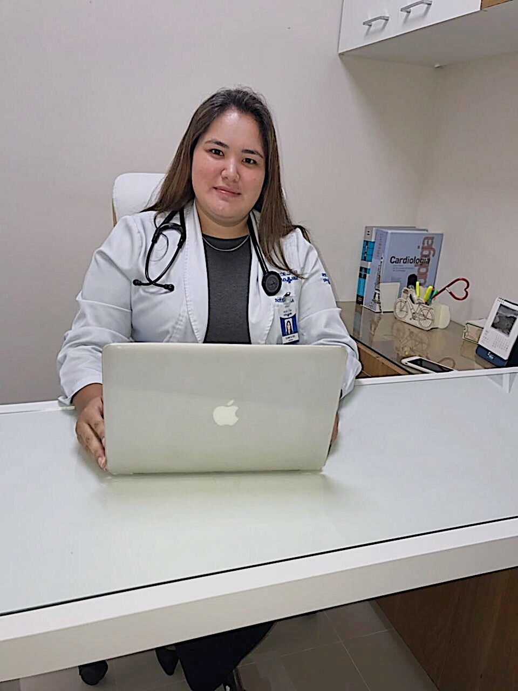

<section>
	<div class="container">
		<div class="row">
			<div class="col-12">
				<h1>Equipe médica</h1>
				<p>Nossa equipe médica é formada por profissionais provenientes de centros de excelência.<br>Possuem atuação em consultório, nível ambulatorial e intrahospitalar.</p>
			</div>
		</div>

		<div class="row equipe_card">	
			<div class="col-12 col-sm-5">
				
			</div>

			<div class="col-12 col-sm-7">
				<h3>Dra Débora Leonor de Mello Junqueira</h3>
				<p>CRM 158.986</p>
				
				<ul>
					<li>Graduação em Medicina: Universidade Regional de Blumenau;</li>
					<li>Residência em Clínica Médica: Universidade Federal de Santa Catarina;</li>
					<li>Residência em Cardiologia: Universidade Federal de São Paulo;</li>
					<li>Residência em Miocardiopatias e Transplante Cardíaco: Universidade Federal de São Paulo;</li>
					<li>Título de Especialista pela Sociedade Brasileira de Cardiologia.</li>
				</ul>

				<h4>Atuação:</h4>
				
				<ul>
					<li>Hospital Israelita Albert Einstein: Pronto atendimento clínico e cardiológico, Ensino, Assistência Hospitalar e Professora da pós graduação</li>
					<li>TotalCare: Ambulatório de Cardiologia e Insuficiência Cardíaca;</li>
					<li>UNIFESP: Ambulatório de Insuficiência Cardíaca.</li>
				</ul>

				<h4>Filiação:</h4>
				<ul>
					<li>Sociedade Brasileira de Cardiologia;</li>
					<li>SOCESP.</li>
				</ul>
			</div>
		</div>
		
		<hr>

		<div class="row equipe_card">	
			<div class="col-12 col-sm-5">
				
			</div>

			<div class="col-12 col-sm-7">	
				<h3>Dra Eliane Reiko Alves</h3>
				<p>CRM 130.040</p>
				
				<ul>
					<li>Graduação em Medicina: Pontifícia Universidade Católica de São Paulo;</li>
					<li>Residência em Clínica Médica: Universidade Federal de São Paulo;</li>
					<li>Residência de Cardiologia: Universidade Federal de São Paulo;</li>
					<li>Residência em Miocardiopatias e Transplante Cardíaco: Universidade Federal de São Paulo;</li>
					<li>Título de Especialista pela Sociedade Brasileira de Cardiologia.</li>
				</ul>

				<h4>Atuação:</h4>
				<ul>
					<li>Hospital São Luiz Jabaquara: Equipe assistente em Cardiologia;</li>
					<li>Hospital Alípio Corrêa Neto: Preceptora da Residência de Clínica Médica;</li>
					<li>UNIFESP: Ambulatório de Insuficiência Cardíaca;</li>
					<li>Instrutora do Curso de Suporte Avançado de vida em Insuficiência Cardíaca (SAVIC).</li>
				</ul>

				<h4>Filiação:</h4>
				<ul>
					<li>Sociedade Brasileira de Cardiologia;</li>
					<li>SOCESP.</li>
				</ul>
			</div>
		</div>
	</div>
</section>
